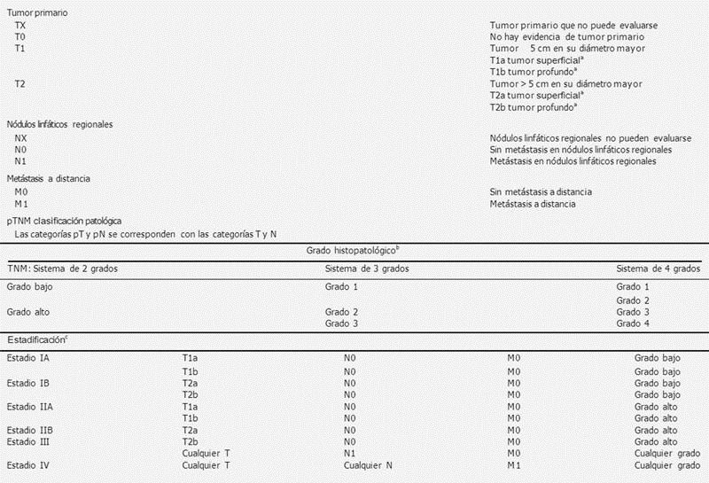

Sarcomas de partes blandas

1.4 Anatomía patológica y biología molecular
DIAGNÓSTICO ANATOMOPATOLÓGICO Y MOLECULAR
Consideraciones generales
Para una valoración correcta de la biopsia inicial, y debido a que diferentes tipos de SPB tienden a aparecer en determinadas localizaciones o grupos de edad, el patólogo debe disponer de todos los datos clínicos y radiológicos del paciente: edad, tiempo de evolución, antecedente de neoplasias previas, localización, profundidad y tamaño del tumor.
En los casos de pacientes previamente biopsiados y remitidos desde otros centros hospitalarios, se recomienda solicitar el material de biopsia y/o resección (preferentemente bloques de parafina), así como el informe anatomopatológico, para revisión y confirmación histológica.
Para el diagnóstico de los tumores de partes blandas superficiales y menores de 2-3 cm puede ser válida la biopsia escisional. En los tumores de localización profunda y/o mayores de 5 cm se recomienda la biopsia cerrada (tru-cut) como procedimiento diagnóstico inicial. La biopsia abierta (incisional) debe usarse sólo en casos seleccionados.
La punción aspirativa con aguja fina (PAAF) es rentable para el diagnóstico de los sarcomas de células redondas. En el resto de sarcomas está indicada principalmente para confirmar la presencia de recidiva o metástasis de un sarcoma ya conocido. Por lo tanto, salvo en centros con una gran experiencia, la PAAF no se recomienda como método diagnóstico inicial.
Clasificación TNM para sarcomas de partes blandas.
AJCC Cancer Saging Manual, Eighth Edition (2017) published by Sringer International Publishing.
Siempre que sea posible y no interfiera con el diagnóstico, se recomienda congelar fragmentos de tumor y conservarlos en el banco de tumores, así como tomar muestras para citogenética (improntas sobre portaobjetos preparados para inmunohistoquímica). Se trata de acciones importantes, tanto para el diagnóstico (especialmente en tumores tratados mediante tratamientos neoadyuvantes), como para la investigación traslacional en sarcomas, que requieren el consentimiento informado del paciente. Para una buena preservación del tejido tumoral, el intervalo transcurrido entre la toma de biopsia y la congelación no debe ser superior a 30 minutos. Dicho de otro modo, cuando sea posible hay que enviar todo el material desde el quirófano como si se tratase de un estudio intraoperatorio.
El diagnóstico anatomopatológico de los SPB se basa principalmente en la morfología y la inmunohistoquímica.
El diagnóstico del tipo histológico debe realizarse de acuerdo con la actualización de la clasificación de los sarcomas publicada por la Organización Mundial de la Salud en 2020, 5ªEdición que integra datos morfológicos, inmunohistoquímicos, citogenéticos y moleculares. El grado se establece mediante la evaluación de tres parámetros histológicos:
• |
La diferenciación tumoral. |
|---|---|
• |
El índice mitótico. |
• |
El porcentaje de necrosis. |
En nuestro medio, y por tener mayor reproducibilidad, se recomienda utilizar los criterios de la Federación Nacional de Centros de Lucha contra el Cáncer de Francia, que distinguen tres grados de malignidad. En algunos sarcomas, el tipo histológico define por sí mismo la agresividad del tumor y el grado no aporta información pronóstica adicional (Ejemplo: sarcoma sinovial)
Importante
Los estudios de inmunohistoquímica permiten determinar el tipo de diferenciación tumoral (muscular, neural, etc.) y descartar otros tipos de tumores que no son mesenquimales (carcinoma, melanoma o linfoma), pero en ningún caso da información acerca de la benignidad o la malignidad del tumor.
Si a pesar del estudio morfológico e inmunohistoquímico no puede establecerse un diagnóstico, puede estar indicado el estudio molecular. Su objetivo habitual, en el caso de los SPB, es hallar la presencia de translocaciones cromosómicas y sus fusiones génicas mediante reacción en cadena de la polimerasa (PCR) en transcriptasa inversa (RT-PCR) o hibridación in situ fiuorescente (FISH).
La utilización de técnicas moleculares no es imprescindible para el diagnóstico de todos los casos de sarcomas. Algunas indicaciones son:
• |
Aparición de una variante morfológica poco habitual de un sarcoma (p. ej., un sarcoma sinovial pobremente diferenciado con una morfología de células redondas). |
|---|---|
• |
Aparición de un sarcoma de aspecto morfológico habitual, pero en una edad y/o localización anómalos. |
• |
Detección de mutaciones puntuales en genes clave para la señalización celular que nos permitan realizar tratamientos dirigidos (Gen KIT e imatinib, NTRK larotrectinib/entrectinib etc). |
El grupo GEIS y la Sociedad Española de Anatomía Patológica disponen de listados de centro de referencia (CR) para cada tipo de estudio molecular. Conforme a la Ley 14/2007, de Investigación Biomédica, puede ser necesario contar con el consentimiento informado del paciente para realizar estudios moleculares.
Biopsia tru-cut
La biopsia por aguja (tru-cut) es el método recomendado actualmente, porque resulta poco invasivo y no dificulta actuaciones quirúrgicas posteriores. El papel de la biopsia por aguja es documentar la presencia de malignidad, establecer si la lesión es mesenquimal y descartar que se trate de un carcinoma metastásico, melanoma o linfoma. En los tumores mesenquimales permite clasificar el tumor (tipo histológico) y proporcionar el grado. Debido a la limitación de la muestra, en ocasiones no es posible establecer con seguridad un diagnóstico histológico. En estas situaciones puede ser necesaria una biopsia incisional. Por otro lado, los SPB son tumores heterogéneos y en una muestra pequeña puede infravalorarse el grado histológico. De este modo, a no ser que aparezca un alto grado obvio en la biopsia por aguja, el grado histológico definitivo se establece en la pieza quirúrgica.
En el informe anatomopatológico de una biopsia tru-cut de un sarcoma deben constar:
• |
El tipo histológico (cuando esto no es posible puede ser útil intentar clasificar en las categorías de pleomórfico, fusocelular, mixoide o de células redondas). |
|---|---|
• |
El grado histológico (con la salvedad expresada en el párrafo anterior). |
• |
El resultado de las pruebas complementarias que se hayan llevado a cabo (inmunohistoquímica y/o biología molecular). |
Piezas de resección
A partir de la pieza de resección, y de manera adicional respecto a la biopsia tru- cut, el patólogo debe aportar la información siguiente:
• |
Descripción macroscópica de la pieza quirúrgica: medidas, procedimiento quirúrgico (biopsia escisional, exéresis simple, resección local amplia/compartimental, amputación), identificación de los tejidos (piel, tejido celular subcutáneo, fascia, músculo, vasos, nervios, hueso) y de los órganos afectados (en tumores toraco-abdominales, pélvicos o retroperitoneales), e identificación de la zona de biopsia previa. |
|---|---|
• |
Descripción del tumor: tamaño, localización, aspecto, color, presencia de necrosis y/o hemorragia (porcentaje aproximado), invasión de estructuras vecinas (vasos, nervios, hueso). |
• |
Márgenes de resección: la mayoría de las piezas contienen seis márgenes (superficial/profundo, proximal/distal y medial/lateral). Debe medirse la distancia del tumor a los márgenes y especificar los que se encuentran a menos de 2 cm. Señalar si un margen está constituido por una fascia, periostio o adventicia de un vaso. También deben especificarse los márgenes en las piezas de resección de metástasis. |
• |
El resultado de las pruebas complementarias que se hayan llevado a cabo (inmunohistoquímica y/o biología molecular). |
• |
Nódulos satélite y distancia al tumor principal. |
• |
Ganglios linfáticos: la afectación ganglionar es poco frecuente en los SPB, salvo en algunos tumores, como sarcoma epitelioide, sarcoma sinovial y angiosarcoma. |
Debe realizarse un muestreo adecuado. En general se recomienda una sección por cada centímetro de tumor. En tumores muy grandes es suficiente con un total de 10-12 bloques. Las secciones correspondientes a los márgenes deben tomarse perpendicularmente a ellos. Si un margen se encuentra a más de 5 cm no es necesario incluirlo, excepto si se trata de un sarcoma epitelioide o de un angiosarcoma, porque estos tumores tienen una tendencia mayor a ser multicéntricos o contar con nódulos satélites.
El informe anatomopatológico de las piezas de resección por SPB debe incluir:
• |
Procedimiento quirúrgico |
|---|---|
• |
Localización y profundidad del tumor. |
• |
Tamaño, tipo y grado histológico. |
• |
Estado de los márgenes de resección. |
• |
Invasión de estructuras adyacentes y afectación ganglionar si la hay. |
En los tumores tratados con quimioterapia y/o radioterapia neoadyuvante se recomienda incluir una valoración de la respuesta al tratamiento (porcentaje de necrosis, hialinización etc), con sistemas basados en los empleados en los sarcomas óseos.
En caso de que se hayan realizado, deben incluirse los resultados de los estudios complementarios (inmunohistoquímica, FISH, RT-PCR).